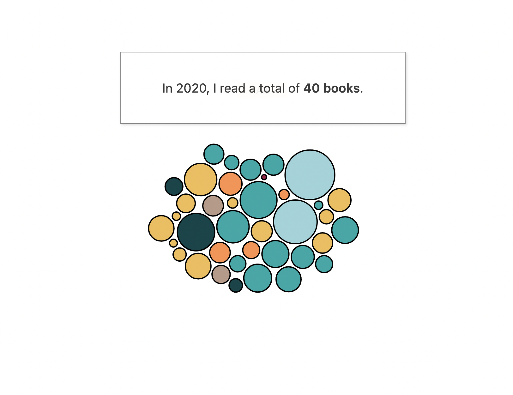
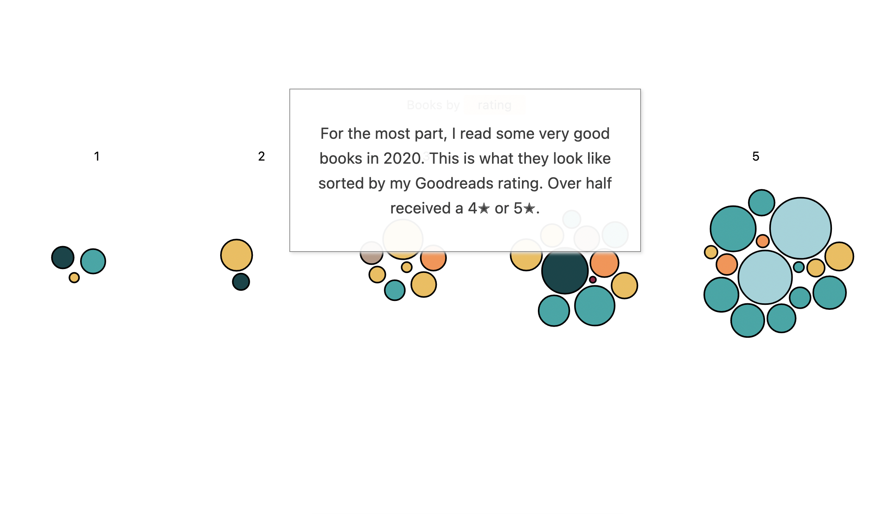
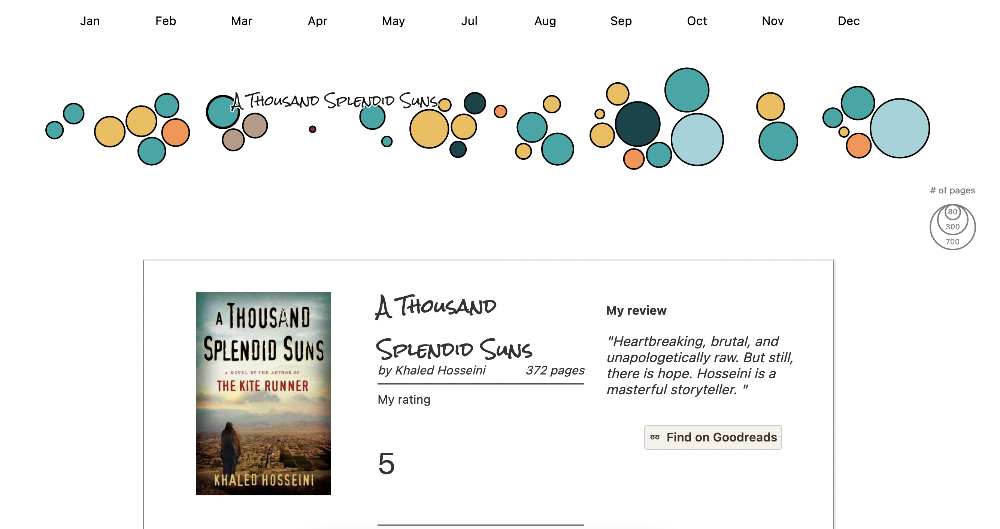

RESPONSIBILITIES
Everything (design, information visualization, writing)
ABOUT
In 2020, I read a lot of books. This interactive scrolly website visualizes all 40 of them by grouping and arranging books into genres, ratings, and a chronological timeline.
Readers can scroll through the story and see which books stood out to me most. At the end of the piece, the bubbles become interactive and can be selected to read my full review of each book.
Go to site